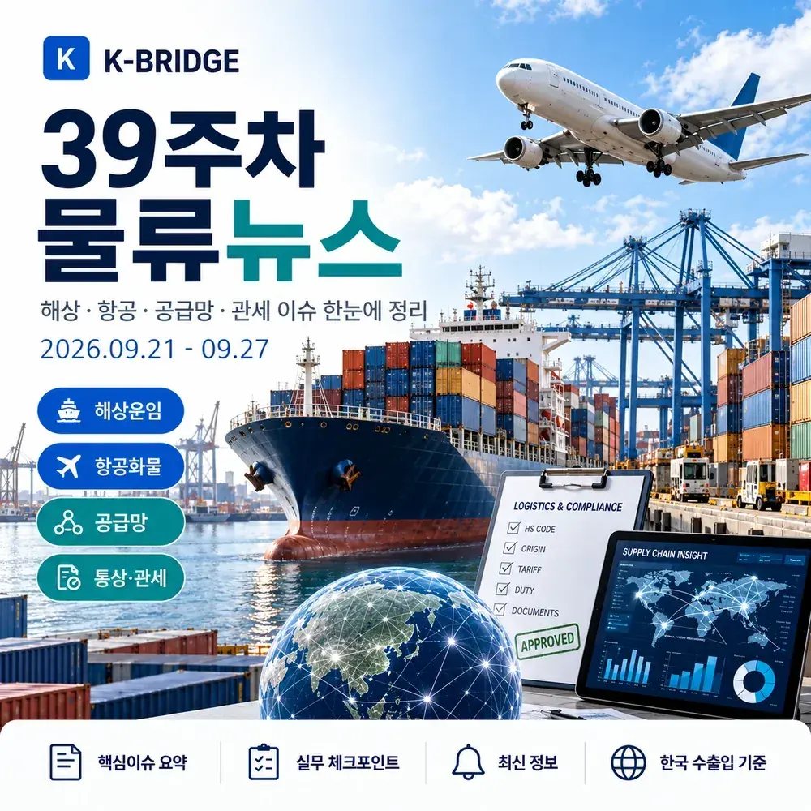
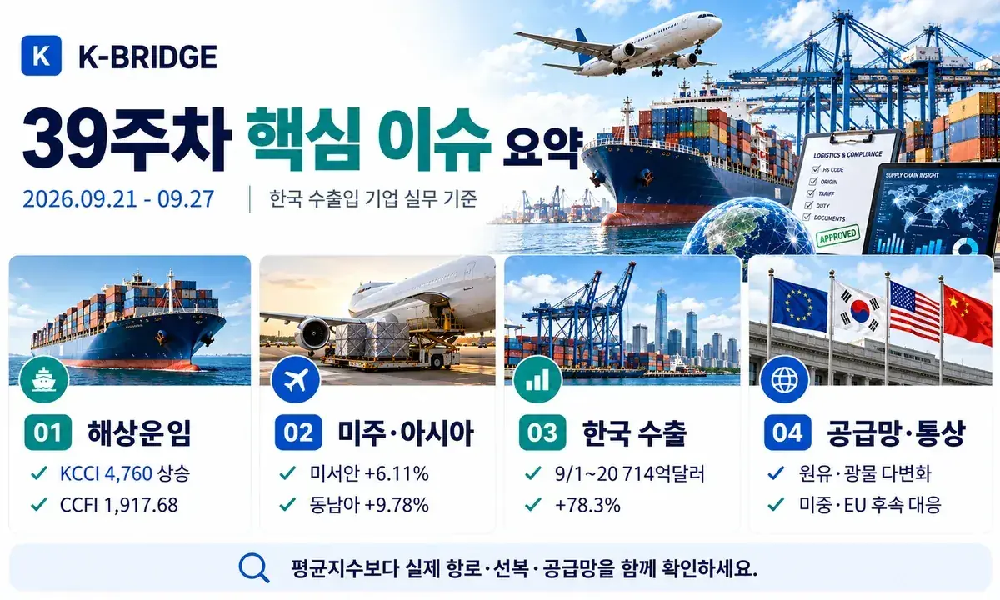
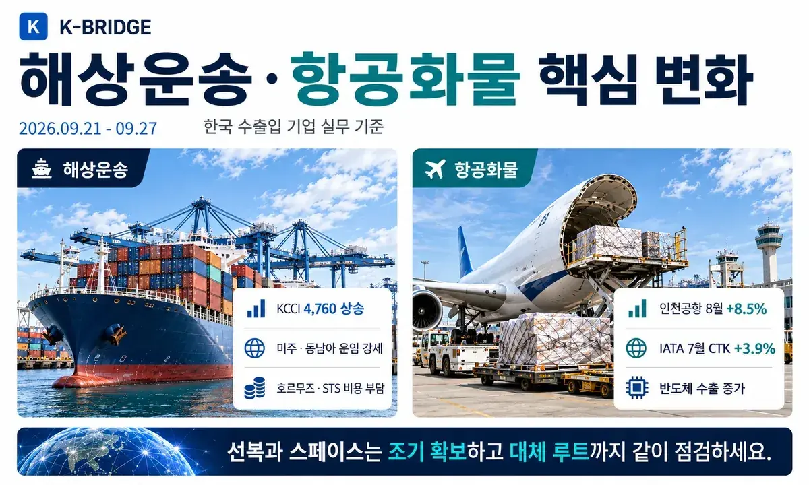
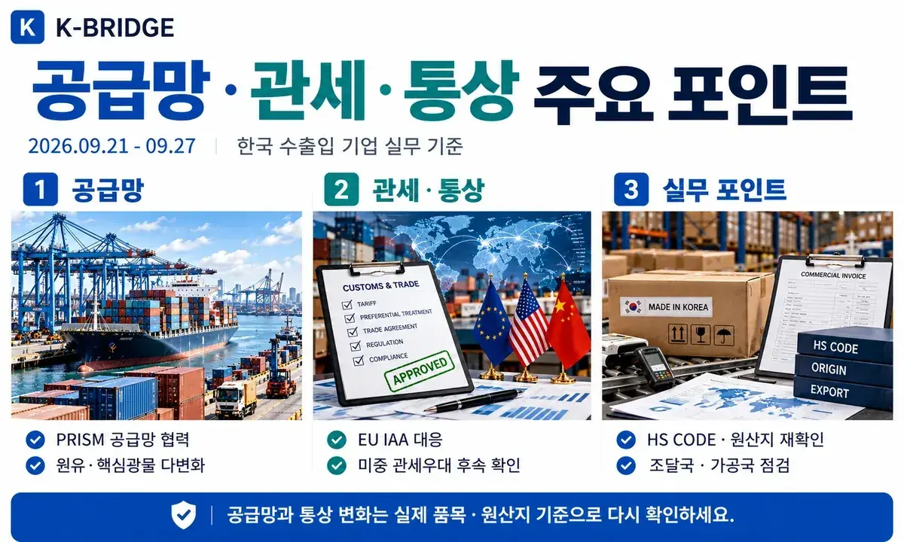
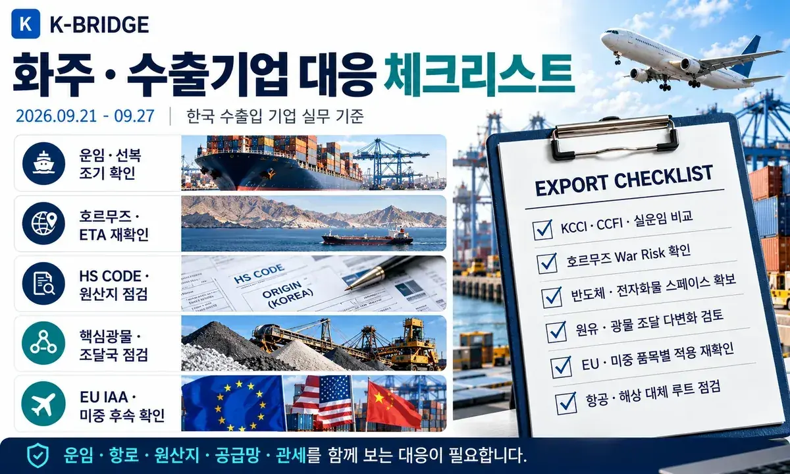

39주차 핵심 질문에 대한 답
이번 주 한국 화주가 가장 먼저 볼 것은 미주·동남아 운임 상승과 공급망 다변화입니다. KCCI는 4,760(+1.36%)으로 상승했고 미주 서안은 6.11%, 동남아는 9.78% 올랐습니다. SCFI는 3,686.62로 보합권이지만 CCFI는 1,917.68(+1.1%)로 상승했고 한국항로는 10.0%, 동남아는 8.9% 올랐습니다. 국내에서는 9월 1~20일 수출이 714억달러(+78.3%)로 같은 기간 역대 최대를 기록했습니다. 중동에서는 호르무즈 통항이 여전히 정상화되지 않았고, 정부는 원유·핵심광물 조달 다변화와 비축 확대에 속도를 내고 있습니다.

1. 39주차 시장 한눈에 보기
39주차는 미주와 동남아 운임 상승, 한국 수출 급증, 중동 에너지 물류 불확실성, 공급망 다변화 정책 강화가 동시에 나타난 주간입니다. SCFI만 보면 시장이 정체된 것처럼 보이지만 KCCI·CCFI의 미주·한국·동남아 항로는 강했습니다. 따라서 평균지수보다 실제 목적지별 운임과 선복을 확인하는 것이 중요합니다.
| 지표 | 39주차 기준 | 주간 변화 | 실무 해석 |
|---|---|---|---|
| KCCI | 4,760 | 9/21 · +1.36% | 미주 서안 +6.11%, 동남아 +9.78% |
| SCFI | 3,686.62 | 9/24 · -0.03% | 종합지수 보합, 노선별 차별화 지속 |
| CCFI | 1,917.68 | 9/24 · +1.1% | 한국 +10.0%, 동남아 +8.9%, 미동안 +5.5% |
| 9/1~20 수출 | 714억달러 | +78.3% | 반도체 341억달러, 무역흑자 230억달러 |
| 호르무즈 | 주말 17척 | 전주 37척 | AIS 비표시 선박 포함 시 실제 통항량은 불확실 |
| 인천공항 8월 화물 | 259,965톤 | +8.5% | 항공 수출화물 수요 견조 |
2. 해상운송·글로벌 항로
KCCI 4,760 - 미주·동남아 운임 강세
한국해양진흥공사 기준 9월 21일 KCCI는 4,760으로 전주 대비 64포인트, 1.36% 상승했습니다. 미주 서안은 7,942(+6.11%), 미주 동안은 11,284(+2.40%), 호주는 4,842(+4.15%), 동남아는 1,313(+9.78%)로 올랐습니다. 반면 유럽은 3,985(-4.82%), 지중해는 4,349(-6.11%), 서아프리카는 4,761(-4.09%)로 하락했습니다.
SCFI 3,686.62 - 종합지수는 보합권
9월 24일 SCFI는 3,686.62로 전주 3,687.83보다 1.21포인트 낮아 사실상 보합이었습니다. SCFI는 평균 흐름을 보여주는 지수이므로 실제 한국발 견적과 방향이 다를 수 있습니다. 특히 이번 주 KCCI·CCFI에서는 미주·동남아·한국항로의 상승폭이 더 크게 나타났습니다.
CCFI 1,917.68 - 한국항로 +10.0%, 동남아 +8.9%
9월 24일 CCFI는 1,917.68(+1.1%)를 기록했습니다. 한국항로는 10.0%, 동남아 8.9%, 미주 동안 5.5%, 미주 서안 4.3% 상승했습니다. 반면 유럽은 -4.1%, 지중해는 -4.0%였습니다. 아시아 역내와 미주향은 선복과 Free Time을 조기에 확보하는 편이 유리합니다.
호르무즈 통항 - 주말 17척, 전주 37척보다 감소
Reuters는 9월 21일 주말 동안 호르무즈를 통과한 상품선이 17척으로 전주 37척보다 줄었다고 보도했습니다. 전쟁 이전 평균 일일 125척과 비교하면 매우 낮은 수준입니다. 일부 유조선은 AIS를 끈 채 통과하는 것으로 알려져 집계 숫자만으로 실제 흐름을 단정하기는 어렵지만, 보험·선박가용성·ETA 불확실성은 여전히 높습니다.
중동 원유, STS 환적 확대 - 물량은 유지하지만 운송비는 높아져
Reuters 분석에 따르면 오만 인근 선박간 환적(STS)은 9월 약 250만 bpd로 8월 140만 bpd보다 크게 늘었습니다. 우회·셔틀 방식이 공급 단절을 막는 역할을 하지만 VLCC 비용이 배럴당 30달러를 넘는 사례도 나타나고 있어 한국 정유·석화 기업은 원유가격뿐 아니라 운송·환적비를 함께 봐야 합니다.

3. 항공화물 시장
인천공항 8월 화물 +8.5% - 한국 항공화물 수요 견조
인천국제공항공사 공식 통계에서 8월 화물은 259,965톤으로 전년 대비 8.5% 증가했습니다. 출발 화물은 10.6% 증가해 도착 화물보다 증가폭이 컸습니다. 반도체·전자부품 등 고부가 수출 증가가 이어지고 있어 미주·아시아 주요 허브 스페이스는 사전 확보가 중요합니다.
IATA 최신 글로벌 공식치 - 7월 CTK +3.9%
9월 27일 현재 IATA의 최신 월간 글로벌 항공화물 발표는 7월 실적입니다. 글로벌 CTK는 전년 대비 3.9%, 아시아·태평양은 4.1%, 아시아-북미는 9.2% 증가했습니다. 새로운 8월 글로벌 수치가 나오기 전까지는 인천공항 8월 실적과 IATA 7월 글로벌 지표를 함께 보는 것이 적절합니다.
4. 한국 수출·수입
9월 1~20일 수출 714억달러 - 기간 기준 역대 최대
관세청 잠정치에서 9월 1~20일 수출은 714억달러로 전년 동기 대비 78.3% 증가했고, 수입은 484억달러(+26.7%), 무역수지는 230억달러 흑자를 기록했습니다. 조업일수를 고려한 일평균 수출도 89.8% 증가했습니다.
반도체 수출 341억달러 - 같은 기간 역대 최대
9월 1~20일 반도체 수출은 341억달러로 같은 기간 역대 최대를 기록했습니다. 고부가 전자·반도체 수출 증가가 해상보다 항공화물에 더 직접적으로 반영될 수 있어 항공 스페이스·보안·온도·긴급통관 조건을 함께 관리해야 합니다.

5. 공급망·자원안보
한-아세안 PRISM - 핵심광물·첨단산업 공급망 협력 제안
산업통상부는 아세안 경제장관회의에서 한-아세안 FTA 개선협상을 가속화하고, 핵심광물·첨단산업 공급망 협력체계인 PRISM을 제안했습니다. 공동연구·기술·표준·인력 협력까지 확대하는 구상으로, 동남아 조달과 생산거점을 활용하는 기업에는 장기적인 공급망 재편 신호입니다.
K-배터리 로드맵 - 나트륨·전고체 집중, 민간 8조원 투자
정부는 약 4천억원 규모의 차세대 배터리 R&D를 추진하고, 민간은 2026~2030년 8조원 규모 투자를 계획했습니다. 나트륨·전고체 기술이 핵심으로, 향후 배터리 원재료·소재·장비의 국제조달 구조와 위험물·온도관리 물류에도 영향을 줄 수 있습니다.
자원안보 로드맵 - 원유 특정지역 의존도 2035년 50% 이하
정부는 2035년까지 원유 특정지역 의존도를 50% 이하로 낮추고, 2030년까지 2천만 배럴 규모의 비축시설을 확충하는 목표를 제시했습니다. 핵심광물은 38종에서 51종으로 확대하고 비축품목도 24종에서 29종으로 늘리며, 일부 품목은 비축목표를 최대 365일로 상향합니다.
다변화 원유 운임지원 - 9~12월 환급요건 완화
중동 외 미주·유럽·아프리카 원유를 들여올 때 적용하는 수입부과금 환급제도의 요건이 9~12월 한시적으로 완화됩니다. 최소 도입물량 400만 배럴과 1년 장기계약 요건이 제외되고, 환급한도는 운임차액의 최대 100%까지 확대될 예정입니다. 정유사의 도입선 다변화에 직접적인 물류비 지원 효과가 기대됩니다.
6. 관세·통상
EU 산업가속화법 - 한국 기업의 현지조달·시장접근 영향 주시
산업통상부는 유럽의회 대표단에 EU 산업가속화법(IAA) 입법 과정에서 한국을 신뢰할 수 있는 파트너로 고려해달라는 입장을 전달했습니다. EU가 역내생산·조달을 강화할 경우 한국산 기계·배터리·소재·자동차 부품 공급망에 영향을 줄 수 있어, 원산지와 현지생산·조달요건을 계약 단계에서 확인할 필요가 있습니다.
미중 정상회담 - 비민감품목 각 300억달러 관세우대 권고 논의
9월 25일 미국 백악관 발표에 따르면 미중 무역위원회는 양방향으로 각각 300억달러 규모의 비민감 품목에 대해 더 우호적인 관세대우를 권고하는 데 의견을 모았습니다. 미국 수출 품목에는 농산물·수산물·목재·화장품·의료기기 등이, 미국 수입 측에는 소형가전·완구 등이 포함됐습니다. 다만 실제 세율과 시행일은 후속 세부조치가 확인된 뒤 거래에 반영해야 합니다.
희토류·핵심광물 - 미중 공급망 협의 지속
미국 측 발표는 양국이 희토류와 핵심광물 공급부족 문제에 대한 협의를 계속한다고 밝혔습니다. 한국 기업은 미중 간 조치가 완화되더라도 특정국 조달 의존도를 바로 높이기보다, 조달국·정제국·원산지·수출통제 여부를 함께 확인하는 것이 안전합니다.

7. 화주·수출기업 대응 체크리스트
- 미주·동남아: KCCI·CCFI 상승폭이 커 실제 선사 스페이스, Free Time, PSS 적용 여부를 조기에 확인합니다.
- SCFI 해석: 종합지수가 보합이어도 한국발·목적지별 운임은 다르게 움직이므로 SCFI 하나만으로 예산을 확정하지 않습니다.
- 호르무즈: 통항량, War Risk, STS 환적 여부, 선박 가용성, ETA 버퍼를 항차별로 확인합니다.
- 항공: 반도체·전자제품은 메인편과 대체편을 동시에 확보하고 보안·온도·긴급통관 조건을 점검합니다.
- 아세안: 핵심광물·소재는 조달국뿐 아니라 가공국과 원산지 판정 구조까지 확인합니다.
- 원유: 중동 외 조달은 가격뿐 아니라 운임차액·환급지원·항로 안정성을 포함해 비교합니다.
- EU: IAA 등 역내생산·조달 규정이 실제 품목에 적용되는지 현지 파트너와 확인합니다.
- 미중 통상: 정상회담 발표는 후속 품목·세율·시행일이 확정된 뒤 공급망·가격에 반영합니다.
KEY TAKEAWAYS
이 글에서 기억할 것
- KCCI 4,760 · +1.36%
- CCFI 한국항로 · +10.0%
- 9/1~20 수출 714억달러 · +78.3%
- 반도체 수출 341억달러 · 기간 역대 최대
8. 자주 묻는 질문
Q. 39주차 KCCI는 얼마인가요?
Q. SCFI가 보합이면 한국발 해상운임도 그대로인가요?
Q. 호르무즈는 정상 운항 중인가요?
Q. 미중 관세우대 합의를 바로 적용해도 되나요?
NEXT STEP
이 글과 함께 보면 좋은 자료
39주차는 평균지수보다 '실제 항로·선복·공급망' 확인이 중요합니다
케이브릿지는 해상·항공·통관·국내운송을 연결해 운임뿐 아니라 호르무즈 리스크, 원산지·관세, 공급망과 실제 도착일정까지 함께 검토합니다.